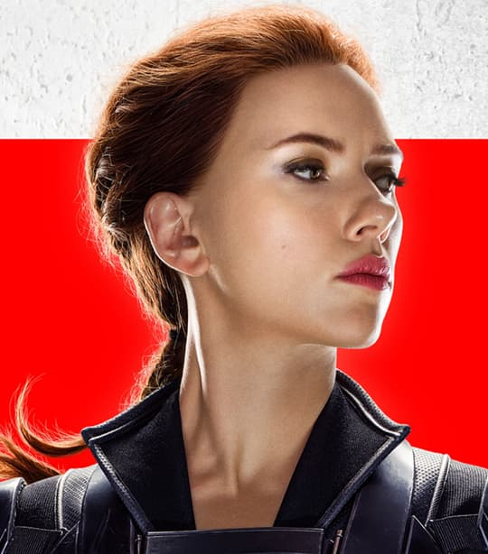

Black Widow est le pseudonyme de Natasha Romanoff (Natalia Alianovna Romanova),
une super-héroïne et espionne d'élite de l'univers Marvel, créée en 1964 par Stan Lee, Don Rico et Don Heck.
En savoir plus..
Retour à l'accueil